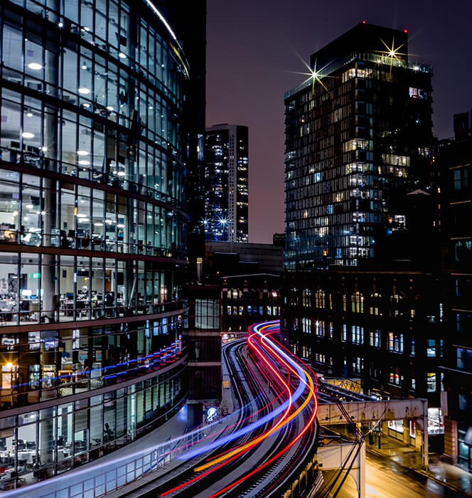

What is Smart City?
A smart city is a municipality that uses information and communication technologies (ICT) to increas operational efficiency, share information with the public and improve both the quality of government services and citizen welfare. This includes data collected from citizens and mechanical devices, that are processed and analyzed to monitor and manage traffic and transport systems, power plants, water supply networks, waste disposal, etc.
Smart city also called eco-city or sustainable city, the smart city aims to improve the quality of urban services or reduce its costs. It stands out for its specificities: smart management, lifestyle, mobility, housing, as well as a smart economy. Their main goal is to reconcile technological innovation with the economic, social and ecological challenges of the city of tomorrow. Their leitmotiv is the quality of life: how to live better together while respecting our environment.
Several major characteristics are used to determine a city's smartness. These characteristics include:
- a technology-based infrastructure
- environmental initiatives
- a high functioning public transportation system;
- a confident sense of urban planning and
- humans to live and work within the city and utilize its resources.

How Exactly Smart City Works?
Smart cities utilize their web of connected IoT devices and other technologies to achieve their goals of improving the quality of life and achieving economic growth. Successful smart cities follow four steps:
- Collection - Smart sensors throughout the city gather data in real time.
- Analysis - Data collected by the smart sensors is assessed in order to draw meaningful insights.
- Communication - The insights that have been found in the analysis phase are communicated with decision makers through strong communication networks.
- Action - Cities use the insights pulled from the data to create solutions, optimize operations and asset management and improve the quality of life for residents.
Benefits of smart cities
Smart cities and technologies have many practical and economic benefits:
- 1.Environmental impact
- Reducing the CO2 footprint is the main driver behind the development of smart and sustainable cities. Improving energy efficiency and storage.
- 2.Optimized energy & water management
- Smart grids and smart water management are recurring themes of smart cities. Energy consumption and potable water monitoring ensure the availability of energy and the quality of tap water across the city.
- 3.Transportation
- Clean and efficient transportation of goods, services and people is essential. In the hope of optimizing mobility, many cities are turning to smart technologies to ease traffic congestion and provide users with real-time updates.
- 4.Security
- Safety is a priority for all cities. The accelerated development of smart cities should allow municipalities to better monitor their citizens thanks to CCTV cameras with facial recognition. In addition, state-of-the-art CCTV cameras are also equipped with motion and smoke detectors, as well as fire alarms.
Smart citie challenges
- INFRASTRUCTURE AND COSTS
- Smart cities use sensor technology to gather and analyse information such as rush hour stats, air quality or crime rates.
- SECURITY AND PRIVACY CONCERNS
- Even though security is part of the benefits, it can also be regarded as a challenge as the use of IoT and sensor technology increases. In fact, the threat of cyber attacks is a critical issue for smart cities. Also, to avoid concerns about data use, smart cities need to involve their citizens. Awareness, education, and transparency on the purpose of data collection are crucial to make the community feel that they are truly taking part in making their city more sustainable.
- SOCIAL RISKS
- Inclusive urbanization must be a priority to deal with the increasing vulnerability of poor and slum populations. That is why we need to ensure that no population is excluded from smart city data collection and use.
Smart cities technologies
Sustainable solutions to urban problems imply smart city developments like:
- 1. Smart buildings
- The optimisation of services like heating, ventilation, and air conditioning (HVAC), as well as energy usage and efficiency, is crucial. Building-integrated photovoltaics are a great solution of smart building management.
- 2. Smart mobility
- Promoting electric vehicles, self-service bikes, public transport and carpooling networks, as well as providing charging stations must be a priority, to give city dwellers true sustainable alternatives to the single-occupant fossil fuelled car.
- 3. Smart lighting
- Lighting optimization aims at reducing energy usage of the lighting systems, by providing the correct amount of light at the correct time with efficient fixtures. Intelligent and weather adaptive streetlights are a good example of smart lighting systems.
- 4. Smart roads
- Control sensors can be used to monitor certain traffic patterns and common traffic jams. Besides, smart technologies can detect the possible deterioration of equipment such as traffic lights and light panels for pedestrians, or the effect of traffic on the
Examples of Smart Cities
Some cities are leading the way in urban sustainability. But which smart city initiatives are the most advanced?
- LONDON
- The bustling city of London has been involved for several years in a smart and sustainable process. In regard to mobility, London was a forerunner by introducing a toll for cars and CCTV surveillance services quite a while ago. The city has also developed a system to encourage walking: pedestrians are accompanied throughout their journey through interactive terminals.
- BARCELONA
- Barcelona is an avant-garde city. The city has created the Urban Lab, a smart cities initiative where companies propose sustainable ideas to improve life for the local population. The city has sensors to manage lighting, green spaces and traffic lights. In addition to smart waste collection, mobility and traffic are of prime concern.
- SINGAPORE
- The very connected Singapore has launched a Smart Nation program to address issues of mobility - making important investments in road sensors, phased traffic lights, and smart parking - energy management and green innovation. The city hosts the CleanTech Park, which includes green industries and green buildings.
- OSLO
- In the Norwegian capital, the focus is on smart lighting: 10,000 streetlights have been equipped with sensors to adjust brightness according to the seasons and lighting needs. The goal is to reduce electricity consumption by 70%. The city also wants to limit car use in urban areas. To this end, an ambitious mobility policy based on public transport has been launched.